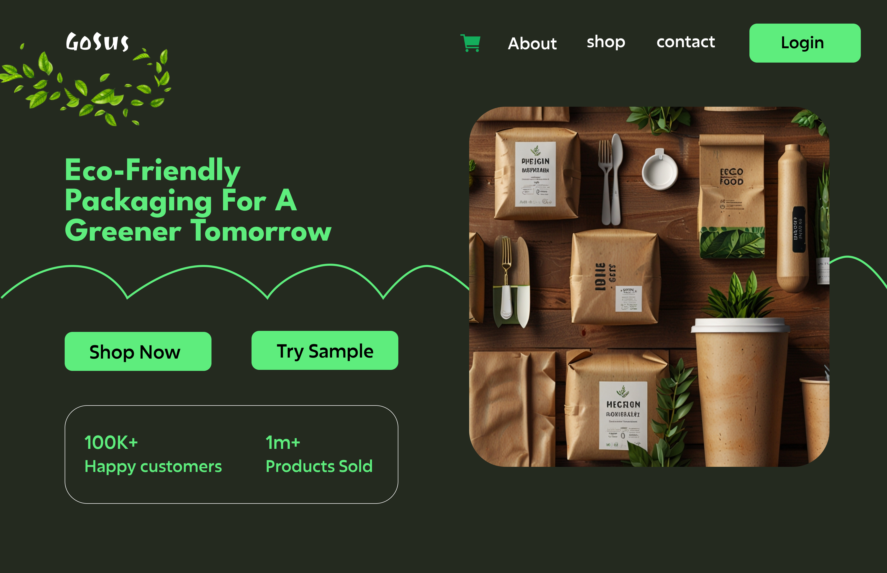

GoSus – Eco-Friendly Packaging Website
Eco-Friendly
Sustainability
E-commerce
UI/UX
Overview
Goal: Design a user-friendly website that promotes eco-friendly packaging products, educates users on sustainability, and increases product conversions.
Problem Statement
As more consumers and businesses become eco-conscious, there's a growing demand for sustainable packaging solutions. However, many such platforms are either too technical or lack engaging design to drive conversions. The challenge was to design a website that:
- Clearly communicates the brand's mission.
- Educates users on sustainable packaging.
- Showcases product offerings effectively.
- Builds trust and encourages purchases or inquiries.
Target Audience
- Eco-conscious consumers.
- Small to medium-sized businesses looking for sustainable packaging.
- Corporates with sustainability mandates.
- Environmental advocates.
Objectives
- Create a clean, modern, and environmentally-aligned UI.
- Ensure easy navigation to key sections.
- Highlight key benefits of sustainable packaging.
- Integrate social proof to build trust.
- Capture leads through newsletter signups.
UX Research & Strategy
Competitive Analysis
- Cluttered interfaces.
- Overuse of jargon.
- Weak calls to action.
User Pain Points Identified
- Lack of clear info about eco-benefits.
- Difficulty in navigating to products.
- Low trust in lesser-known green brands.
Design Solutions
- Hero Section: Clear tagline: “Eco-Friendly Packaging for a Greener Tomorrow”, Prominent CTA buttons: “Shop Now” & “Try Sample”, Visual: High-quality images of the packaging products
- Product Categories: Highlights main category: Food Packaging, Includes short description and CTAs: “Shop Now” and “Learn More”
- Sustainability Education: Section titled: “Why Sustainable Packaging?”, Educates with a short paragraph and “Our Story” CTA, Engaging image grid of products to reinforce visual connection
- Benefits Section: Clearly labeled cards for: Compostable, Biodegradable, Recyclable, Visual icons + simple text for quick understanding
- Testimonials: Carousel-style or grid layout for “Our Happy Customers”, Each includes avatar, name, and quote, Builds social proof and trust
- Newsletter Subscription: Clear CTA to “Subscribe”, Encourages users to stay informed on sustainability trends
- Footer: Quick links to product categories, company info, and legal pages, Social media icons to build community
Usability Considerations
- Color Palette: Earthy greens and whites for natural feel
- Typography: Clean sans-serif font for readability
- Navigation: Top navigation bar with quick links to core pages
Outcomes (Hypothetical)
- Increased click-through to product pages by 30%
- Boost in sample requests from new users
- Growth in newsletter subscriptions
- Higher trust rating through customer testimonials
Key Takeaways
- Simple, clean UI enhances trust in eco-friendly brands.
- Educational content drives awareness and retention.
- Visual storytelling (real product imagery) resonates well with users.
- Accessibility and responsiveness are non-negotiables for a modern product site.
Tools Used
- Design: Figma / Adobe XD
- Development: HTML, CSS, JavaScript
- User Testing: Maze / Google Forms (for feedback)
Low-Fidelity Wireframe
Final Design Screens
Hero
